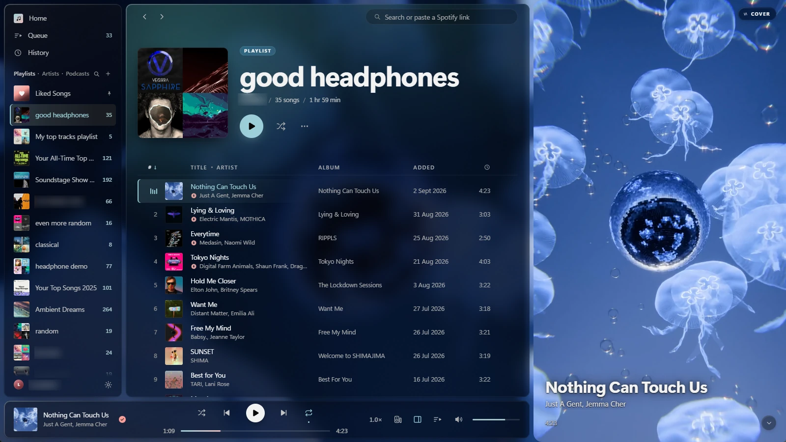

WindowsThis computer
Spotifine-windows-x64-setup.exe- Run the installer you downloaded.
- If a blue box says Windows protected your PC, choose More info, then Run anyway.
- Spotifine opens the Spotify login in your browser. Sign in, and you're listening.
Spotify for Windows and macOS, without the bloat.
Light enough to leave open all day, and it does what the official app won't: true random shuffle, playback speed, and cutting or looping parts of a song.
Needs Spotify Premium. The first launch opens the Spotify login in your browser.
This looks like an Intel Mac. Spotifine runs on Apple Silicon Macs (M1 and later) with macOS 14 or newer.
Spotifine is for Windows PCs and Apple Silicon Macs. Open this page on one of those to download it.

Spotifine isn't signed with a paid developer certificate, so your computer asks once whether you trust it.
On top of the essentials: playlists, albums, artist pages, search, the queue, credits, radio and podcasts. No home feed, no AI DJ, no merch.
Also: 320 kbps and gapless, media keys and lock screen controls, listening history kept on your computer, and updates from Settings.